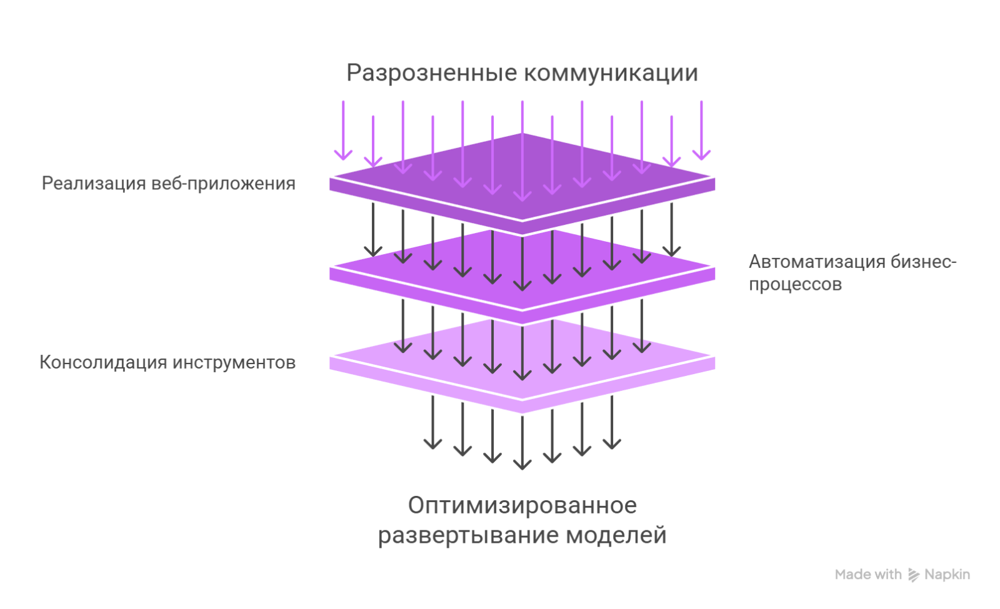
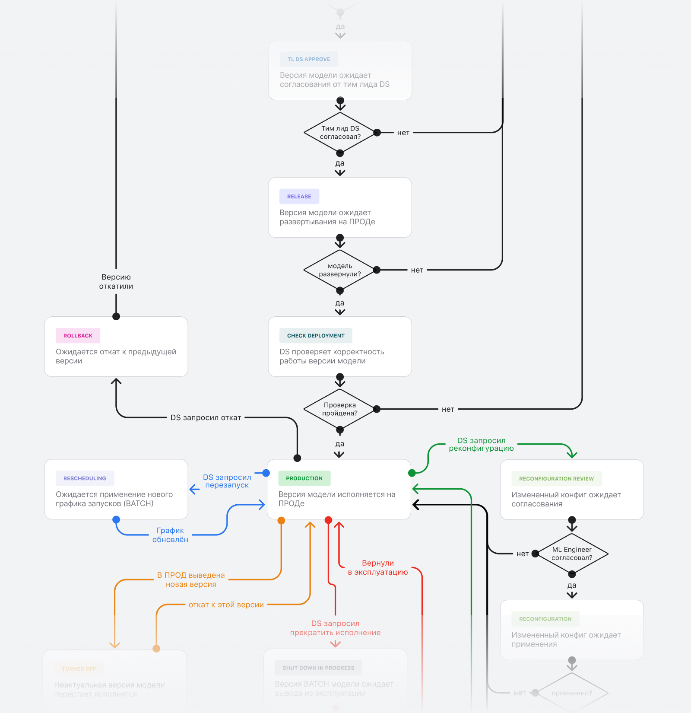
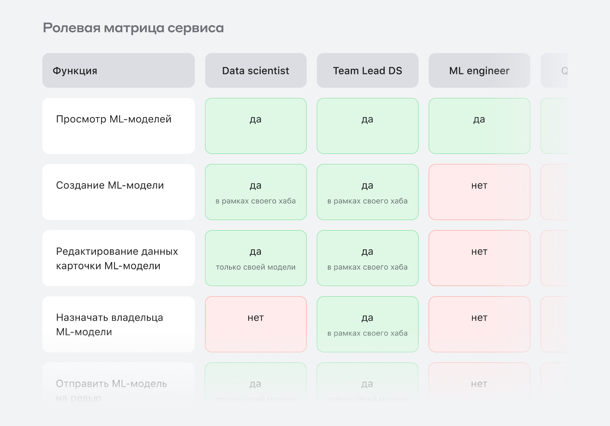
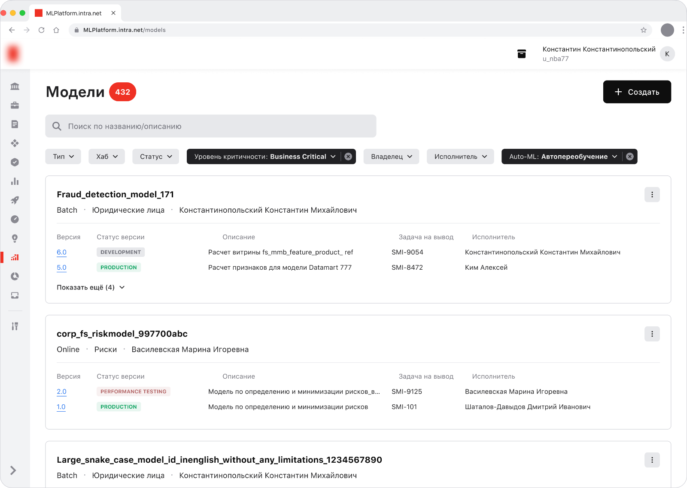
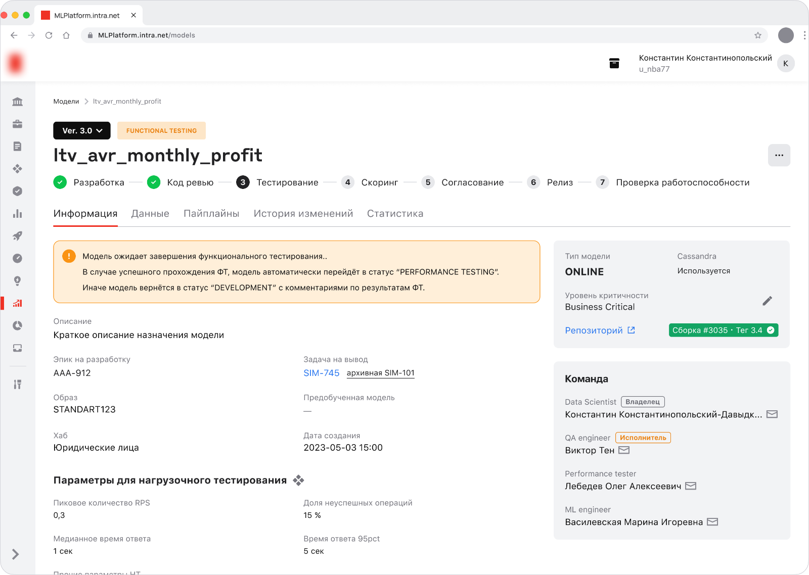

MLOps
Platform
Сервис для автоматизации и унификации запуска ML-моделей и управления их жизненным циклом. Объединяет ETL-процессы и ML-инструменты в единой экосистеме.
Контекст
и проблема
Модели машинного обучения выводились в среду исполнения на основе письменных и устных коммуникаций между множеством участников процесса в рамках задачи в таск-трекере.
Отсутствие унификации подходов, инструментов и единого реестра ML-моделей затрудняло контроль сроков вывода и техническое сопровождение процесса.

Задача
Реализовать сервис для развёртывания ML-моделей через веб-приложение
Автоматизировать и унифицировать этапы бизнес-процесса, где это возможно
Консолидировать ETL-процессы и ML-инструменты в единой экосистеме
Мои действия
Бизнес-ценность и метрики
Уточнила ценность сервиса: ускорить вывод моделей, автоматизировать рутину, снизить риск ошибок, упростить техподдержку.
Сбор требований
Изучила документацию и инструкции дата-саентистов, провела интервью с участниками, разобрала As-is и смежные сервисы (Jira, Jenkins).
Системный анализ
Описала схему бизнес-процесса, сущность ML-модели, её атрибуты, этапы ЖЦ и статусы. Составила ролевую матрицу и пермишены.
Проектирование
Составила User flow, разработала дизайн-концепт и интерактивные прототипы.
Валидация
Проверила реализуемость с разработкой, провела юзер-демо и юзабилити-тесты, прошла внутренний дизайн-чек.
Разработка и тесты
Консультировала frontend/backend, обрабатывала корнер-кейсы, провела фронт-ревью и оформляла баг-репорты.


Результат


Время вывода моделей в прод сократилось вдвое за счёт оптимизации пути и автоматизации.
Сервис стал корпоративным стандартом вывода ML-моделей в среду исполнения.
Продолжаем развивать продукт. Из последнего — встроенный чат с AI-ассистентом.
* В макетах представлены нереальные данные. Кейсы не содержат коммерческой информации. Любые совпадения случайны.